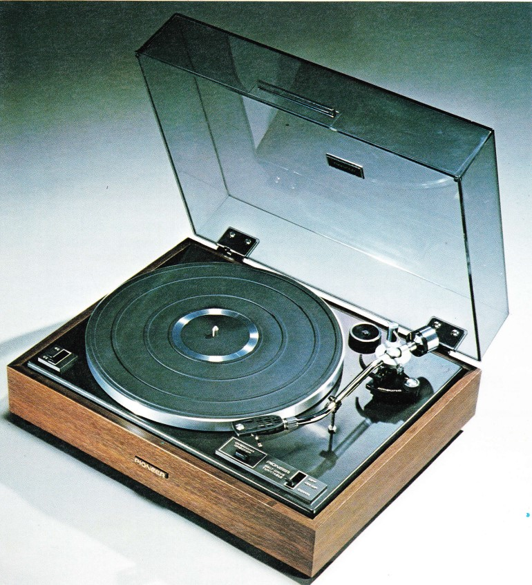
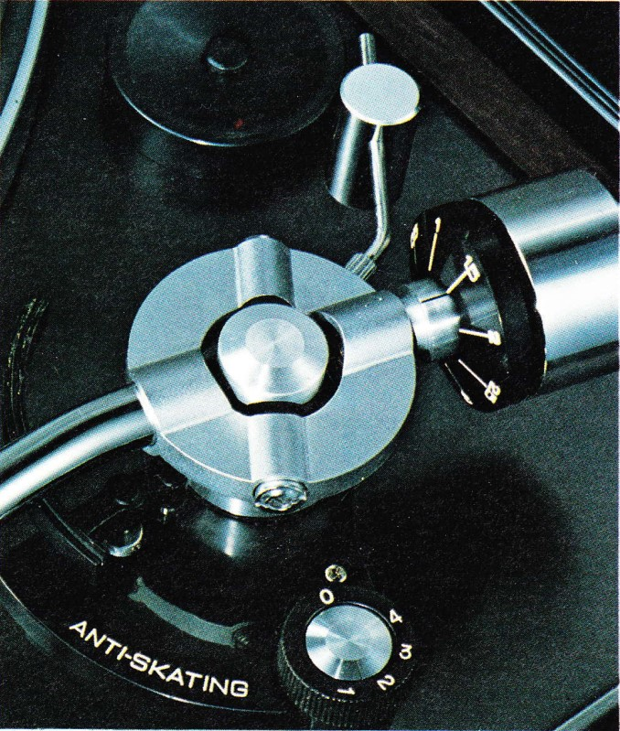
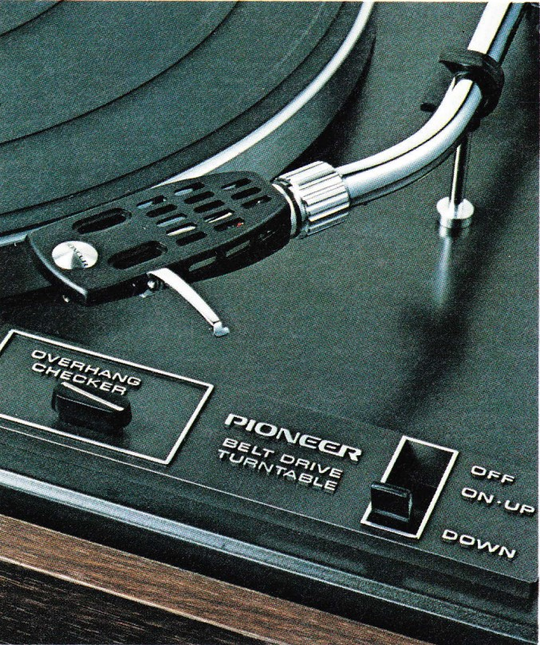
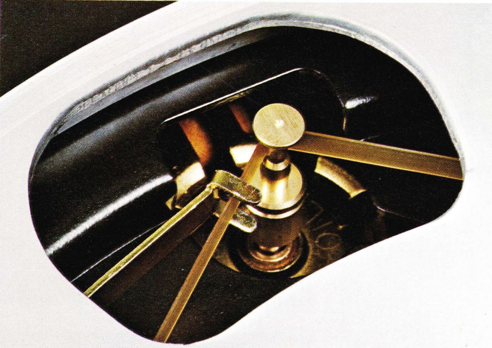
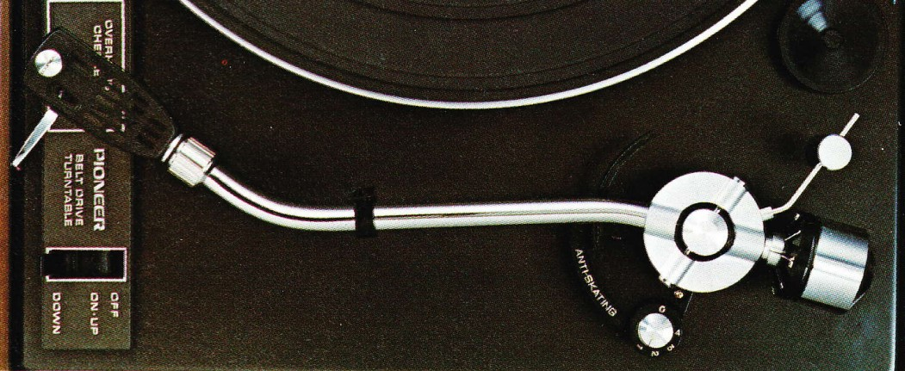

|
A value-packed professionally-finished stero turntable with
sensitive S-shaped tonearm, belt-drive and easy operating controls. |
|||||||
|---|---|---|---|---|---|---|---|
|  |
  |
||||||
| With this well-made stereo turntable, Pioneer proves once again that quality and practicality are synonymous. The budget-priced PL-12D gives you more for your stereo investment than you'd ever expect. A fine synchronous motor that helps cut out audible wow and flutter. An extremely steady belt-drive. An anti-skating control to lessen distortion. A cueing device with simultaneous movement with the start lever. And a beautifully-balanced Sshaped tonearm with plug-in type lightweight head-shell. For the man about to make his first investment into stereo components, the PL-12D becomes more than a budget investment but a truly professional turntable that will serve him well for many years of quality sound reproduction. | |||||||
DRIVE MOTOR SECTIONThe PL-12D employs a 4-pole synchronous motor and a beltdrive system to ensure stable rotation of the turntable platter that is free from line voltage fluctuation. The synchronous motor is much like the motors usually used only in expensive turntables, and is the quietest that you can own. lt gives you an extremely high signal-to-noise ratio, extremely low wow and flutter, and helps cut down on irritating motor vibration TONEARM SECTIONThe tonearm of the PL-12D is the static-balanced, S-shaped type that uses a super hard alloy material at the pivot point of its arm, thereby assuring sensitive, stable tracking at all |
times. The counter weight of the tone arm is the styrus pressure
direct-reading type that gives easy weight adjustment when
cartridge-changing is necessary. Then there is a lightweight plug-in
type head-shell so that you may use a cartridge with its stylus
pressure from 0.75 grams. To cut down on distortion, the PL-12D has
an anti-skating control to suppress the harmful inward force of the
stylus.  OTHER DISTINCTIVE FEATURESThe cueing control, an oil-damped arm elevation device, is connected to the start lever and helps prevent damage to your stylus or your record usually caused by misoperation. There is a stylus position gauge to faciritate easy installation of your favorite cartridge. And pioneer used aluminum foil on the inner part of the PL-12D's wooden cabinet to prevent external noise often caused by your amplifier or other equipment placed near the turntable. The cabinet itself, eleganily styled, is the spring-suspension type and designed to cope with external vibration. The dust cover of the pL-12D is hinged in the free-stop manner, permitting you to leave it at rest at any angle you choose. |
||||||
SPECIFICATIONS:Motor:Drive System: Speeds: Wow and Flutter: Signal to Noise Ratio: Turntable Platter: Tone Arm: Arm Effective Length: Overhang: Max. Usable Cartridge Weight: Accessory Devices: |
4-pole synchronous motor Belt-drive 33-1/3 and 45 rpm Less than 0.1% (WRMS) More than 47dB 12-inch (gOcm) zinc die-cast (weight: 2lb. 10 oz./1.2 log) Static-balance S-shaped type tonearm 221mm 15.5mm 10 grams Anti-skating |
Power Requirements: Power Consumption: Dimensions (overall): Weight: |
control, cueing device, direct-reading counterweight, lateral balancer, stylus position gauge (overhang indicator) U.S.A. and Canada model: 120V 60Hz only, or 110-1 30V, 220-240V 50-60Hz 11 watts 16-15/16(W) x 6-15/32(H) x 14-1/4(D) inches 430(w) x 164(H) x 362(D) mm 16lb.5oz./7.4kg |
||||
NOTE:Specifications and design subject to possible modification wiihout notice. |
|||||||